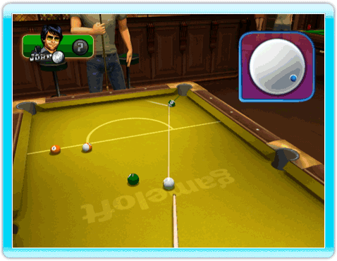
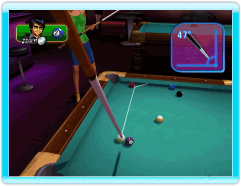

21 |
Ajuster votre coup |
 |
Si vous devez faire un coup sauté ou donner de l’effet à votre coup, appuyez sur le bouton 1 de la Wii Remote pour activer le mode effets. Vous verrez alors apparaître une bille blanche dans le coin en haut à droite de l’écran. Vous voyez le point bleu sur la blanche ? C’est le point d’impact entre la queue et la bille. Utilisez la Wii Remote pour déplacer ce point en fonction de l’effet que vous souhaitez réaliser. Quand vous êtes satisfait, appuyez sur le bouton A.  A ce moment-là, on vous demandera de choisir l’angle de la queue. Pour faire un coup sauté, par exemple, la queue doit faire un angle de 45 degrés. Une fois que vous êtes satisfait de l’angle de la queue, appuyez sur le bouton A.  |
 |
 |
 |